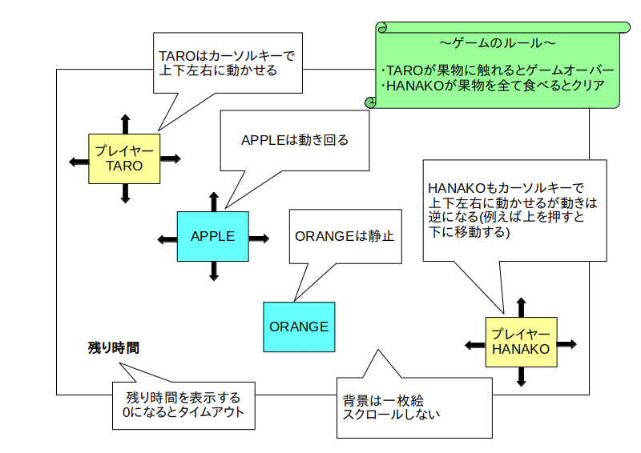

1 スプリント ＝ 20 分
※ クリックすると図だけ表示します。

「スクラム開発」は反復型開発手法の一種で、オブジェクト指向型プログラミングを用いたソフトウェア開発ととても相性が良い手法なので広く使われています。
今回は簡易化したスクラムを使ってミニゲームを開発することでオブジェクト指向開発の流れを実際に体験してみようと思います。
なお用語等の詳しい説明や本格的なスクラムのやり方についてはこちらを参照して下さい。
さて、このページではまずリリースプランニングを行います。
リリースプランニングはスクラムの最初に実施する作業工程で、要求仕様書の作成、全体仕様書の作成、プロダクトバックログの作成を行います。
今回の演習では以下の様な要求仕様書を作成しました。
| 名称 | TARO と HANAKO |
| 用途・目的 | 暇つぶし用ミニゲーム |
| 対象ユーザ | 6 歳以上の男女 |
| システム構成 |
OS: Windows 又は Linux
PC: 低スペック 開発環境: Greenfoot |
| 概要 |
・PC 上で動く 2 次元アクションゲーム
・キーボードのみで操作 ・画面上に TARO と HANAKO というプレイヤーキャラクターと複数の果物を表示する ・ユーザーはキーボード操作により TARO と HANAKO を動かせる ・TARO が果物に触れたらゲームオーバー ・HANAKO が制限時間内に画面上の全ての果物を食べたらゲームクリア ・動きまわる果物もある |
次に「全体仕様書」を作成します。
今回は以下の様にしてみました。
・背景(MyWorld と名付ける)は一枚絵とし、スクロールしない
・ゲーム開始時の TARO の初期位置は画面左上
・ゲーム開始時の HANAKO の初期位置は画面右下
・TARO はカーソルキーで上下左右に動かせる
・HANAKO もカーソルキーで上下左右に動かせるが動きは逆になる(例えば上を押すと下に移動する)
・TARO と HANAKO 間に当たり判定は無い(スレ違い可能)
・TARO と HANAKO は画面外に移動できない
・果物には APPLE と ORANGE がある
・ゲーム開始時に APPLE と ORANGE をランダムな位置に複数個表示する
・APPLE は動きまわる
・ORANGE は静止している
・TARO が果物に触れたらゲームオーバーとなりメッセージ表示
・HANAKO が果物に触れたら食べたことにして果物を消す
・HANAKO が画面上全ての果物を食べたらゲームクリアとなりメッセージ表示
・時間制限を設け、時間内に全ての果物を消せなかったらタイムアップとなりメッセージ表示
・残り時間は画面左下に表示

| クラス名 | 内容 |
|---|---|
| MyWorld |
・背景
・キャラクターの初期配置やタイムアップ処理などのマネージャー処理も行う |
| HUMAN |
・TARO と HANAKO のスーパークラス
・キーボード操作(上下左右移動)を行う ・果物との当たり判定を行い、ゲームクリア処理を行う |
| TARO |
・プレイヤーキャラ その 1
・当たり判定をオーバーライドし、果物に触れたらゲームオーバー処理を行う |
| HANAKO |
・プレイヤーキャラ その 2
・キーボード操作をオーバーライドし、動きを反転させる |
| FRUIT |
・APPLE と ORANGE のスーパークラス
・特に何もしない |
| APPLE |
・果物 その 1
・適当に動く |
| ORANGE | ・果物 その 2 |
※ クラス図は省略
全体仕様書を元にプロダクトバックログを作成します。
プロダクトバックログはカンバンで管理することが多いのですが、今回はソフトウェアの規模が小さいので、ウォーターフォールで良く使われるWBSでバックログの管理をしたいと思います(※)。
※ ちなみに WBS はスクラムと相性が悪いので使わない方が良いという意見もあります。
それで今回は以下のような WBS を作成してみました。
なお、一般的なスプリント期間は1〜4週間なのですが、今回は簡易版スクラムなので 1 スプリント ＝ 20 分とします。